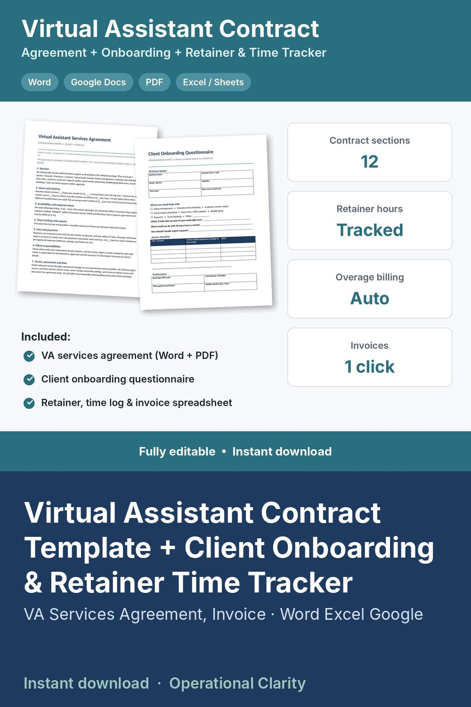

Virtual Assistant Contract Template + Client Onboarding & Retainer Time Tracker

VIRTUAL ASSISTANT CONTRACT TEMPLATE + CLIENT ONBOARDING + RETAINER, TIME & INVOICE TRACKER | VA Services Agreement (Word) + Spreadsheet | Excel & Google Sheets | Instant Download
Everything a freelance virtual assistant needs to sign clients, track retainer hours and bill overages correctly: an editable VA contract, an onboarding questionnaire, and a spreadsheet that does the math.
VA SERVICES AGREEMENT (Word + PDF, 12 sections)
• Services and approved tasks
• Hours and retainer: monthly hours, rollover rules, overage rate, 80% usage notice, hourly increments
• Availability and response times, including urgent requests and after-hours work
• Time tracking and monthly reports
• Fees, invoicing, late fees and expenses
• Client responsibilities
• Access, passwords and data handling
• Confidentiality, independent contractor status, ownership of work
• Term and termination, limitation of liability, signatures
CLIENT ONBOARDING QUESTIONNAIRE (Word + PDF)
• Business basics, tasks checklist, top priorities, urgent request handling
• Access checklist (no passwords by email) and communication preferences
RETAINER, TIME & INVOICE TRACKER (Excel / Google Sheets)
• Packages: set your hourly rate, overage rate and retainer packages. Monthly price and effective hourly rate calculate.
• Clients: package or custom retainer, billing day and status
• Time log: start/end times OR minutes, task category, billable yes/no. Hours calculate.
• Retainer tracker: pick a month and see each client's hours used vs included, hours left, % used, overage hours and total to bill. Amber at 80% used, red when over.
• Invoice: pick a client and month. Retainer, overage or hourly lines fill in automatically, plus hours by task type.
• Dashboard: active clients, monthly recurring revenue, billable hours and %, total to bill, effective hourly rate
WHAT YOU GET
• Virtual Assistant Services Agreement (Word + PDF)
• Client Onboarding Questionnaire (Word + PDF)
• Virtual Assistant Retainer, Time & Invoice Tracker (.xlsx)
• Start Here guide (PDF)
GOOD TO KNOW
• Digital download. No physical item will be shipped.
• Editable template, not legal advice. Have your contract reviewed by a local attorney.
• For your own business. No reselling or sharing of the files.